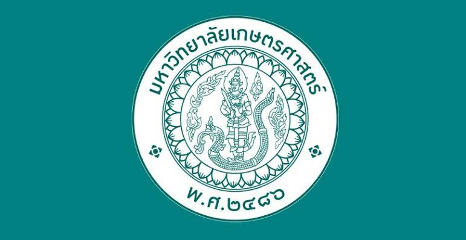

มหาวิทยาลัย: มหาวิทยาลัยเกษตรศาสตร์
วิทยาเขต: บางเขน
คณะที่ต้องการ: คณะวิศวกรรมศาสตร์
สาขาที่ต้องการ: สาขาวิชาวิศวกรรมอุตสาหการ
มุ่งสู่วิศวกรอุตสาหการ
หลังจากเรียนจบวิศวกรรมอุตสาหการ ผมต้องการนำความรู้ด้านการวิเคราะห์ระบบ การเพิ่มประสิทธิภาพ และการวิเคราะห์ข้อมูล มาประยุกต์ใช้ในการแก้ปัญหาอย่างเป็นระบบ พร้อมต่อยอดร่วมกับการเขียนโปรแกรมและเทคโนโลยี เพื่อพัฒนาระบบและสนับสนุนการตัดสินใจให้มีประสิทธิภาพมากยิ่งขึ้น